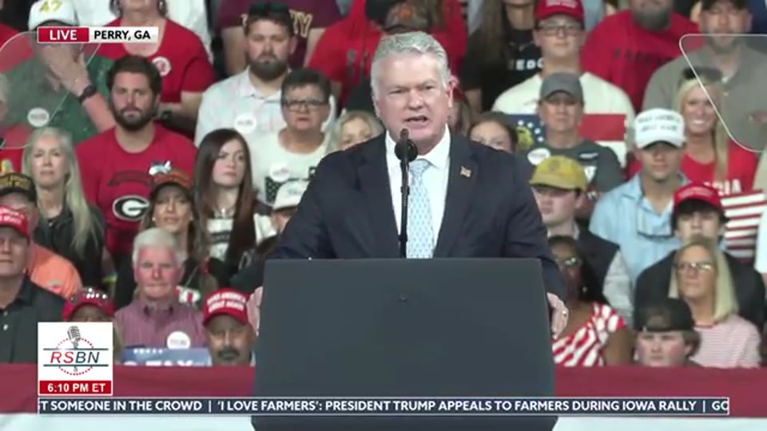
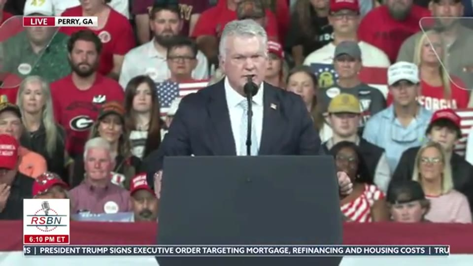
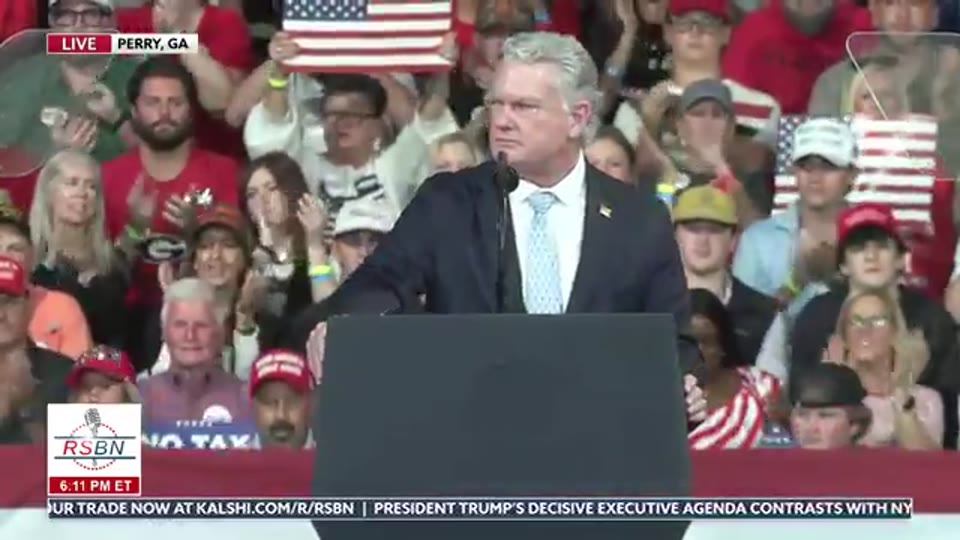
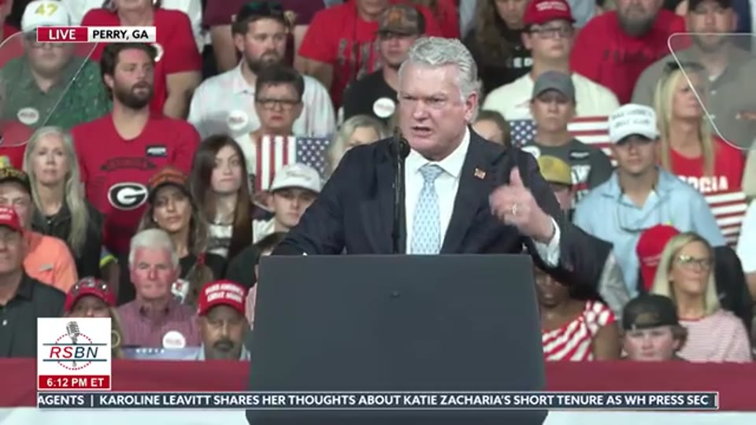
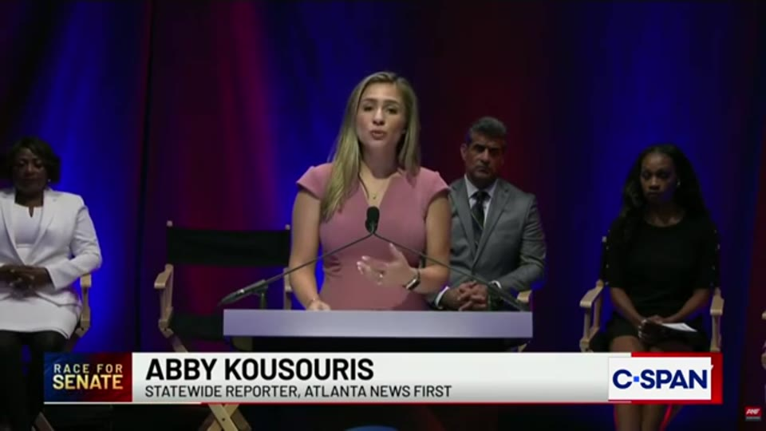
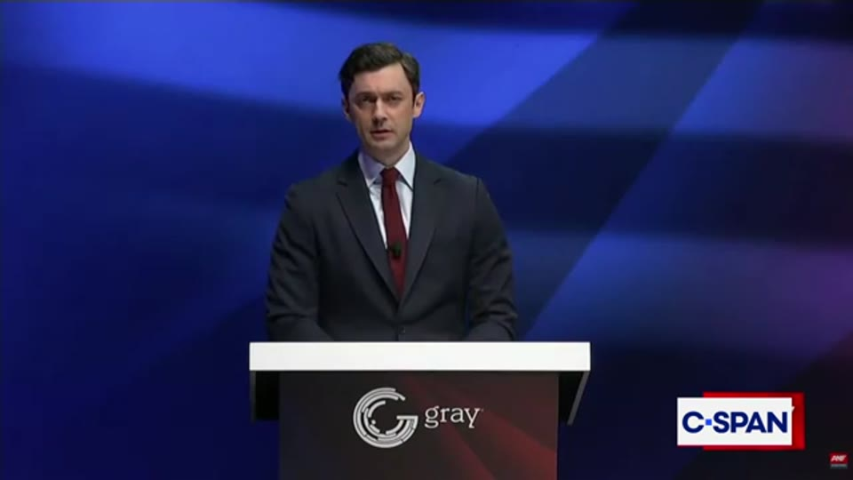
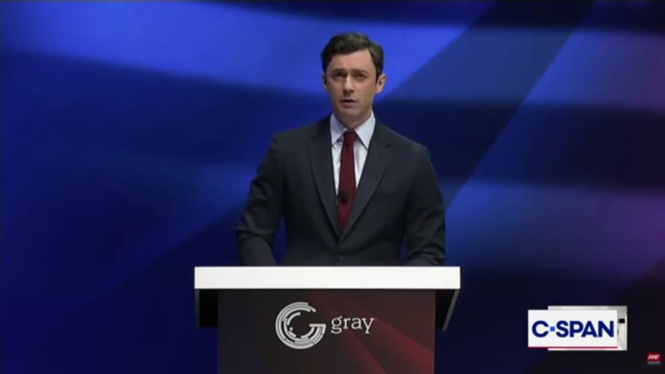

视频 / Video
视频来源 / Video sources
Mike Collins Delivers Strong Remarks Supporting Trump & GA Republicans | Perry Rally - 10/
Right Side Broadcasting Network · 20261024 · 522s · 12/12 frames with faces
Ossoff, Collins trade sharp attacks in second Georgia U.S. Senate debate
WJCL News · 20261014 · 152s · 9/12 frames with faces
"If John Lewis were marching today...Mike Collins would be grabbing a Billy club."
C-SPAN · 20261009 · 128s · 12/12 frames with faces
关键帧与人脸识别 / Keyframes and face identity
GA_collins_perry




GA_debate_clip_1
GA_debate_clip_2


